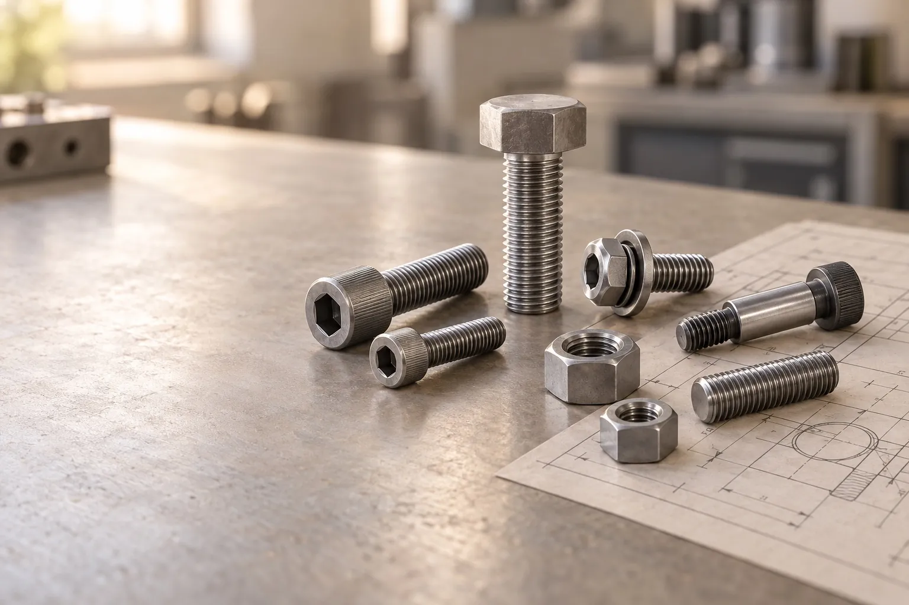

Resumen
Prepare planos, criterios de aceptación e información de entrega para revisar eficazmente una consulta de fijaciones a medida.
Identificar plano y características críticas
Incluya número de plano, revisión, unidades y cantidad. Identifique dimensiones críticas de cabeza, rosca, hombro y arandelas, tolerancias y piezas acopladas. Indique norma o muestra aprobada. Una foto explica apariencia, pero no sustituye requisitos dimensionales.
Definir material, acabado y aceptación
Indique por separado material, propiedades y acabado. Explique qué dimensiones o ensayos necesitan registros y si se requiere aprobación de muestras. Acuerde aceptación y documentación antes de fabricar, no al entregar.
Planificar lotes y entregas
Separe el primer lote de la demanda anual. Indique destino, plazos, embalaje y entregas parciales. Confirme muestras, cantidad y plazo para cada proyecto, sin asumir un pedido mínimo o compromiso de entrega universal.
¿Listo para especificar sus fijaciones?
Envíe su plano y requisitos para iniciar una cotización.